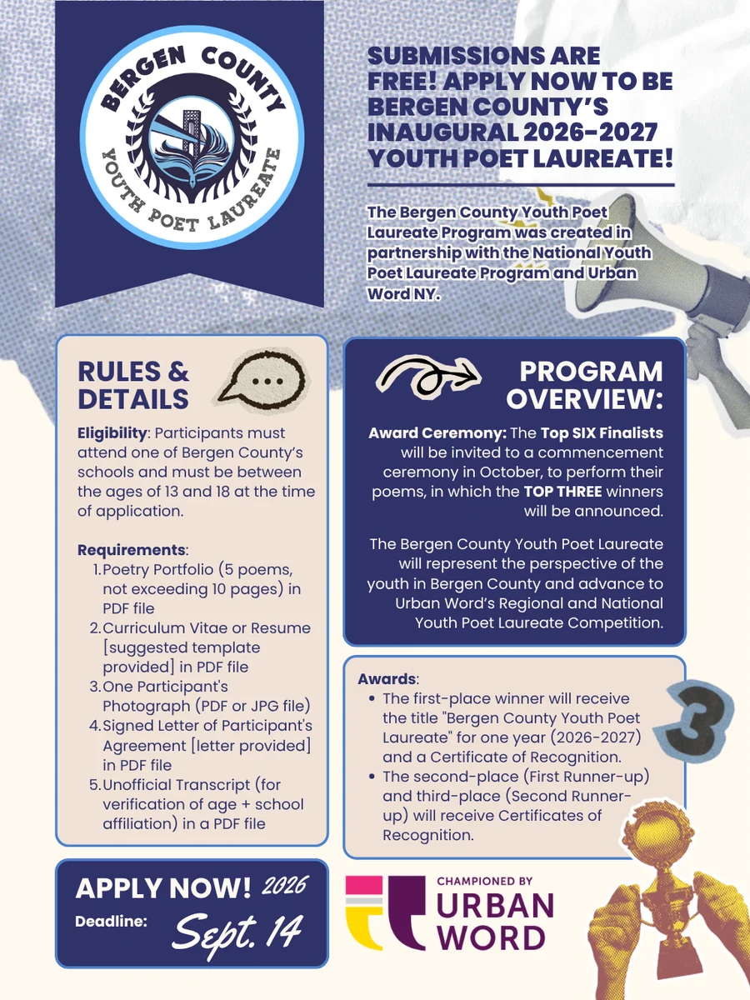
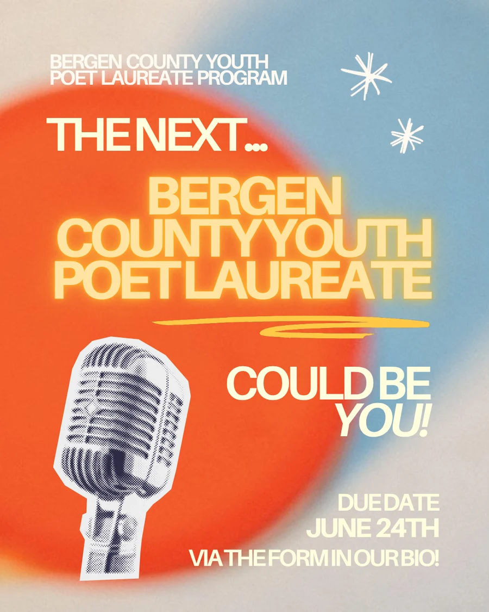

Artistic excellence
Poems with craft, voice and something to say.
Programs › Bergen County YPL
A local chapter of the National Youth Poet Laureate Program, an initiative of Urban Word.
About the program
Founded in 2025 by AIA co-founder Emily Tong, the Bergen County Youth Poet Laureate brings the National Youth Poet Laureate Program to our county.
The program celebrates young poets committed to artistic excellence, civic engagement and social impact, and gives them a platform to share their work with the community.
What we look for
Poems with craft, voice and something to say.
Young people who care about their communities.
Writing that can move people and spark change.
How it works
Both promos here were designed by AIA members.


Apply
See the application for eligibility and deadlines.